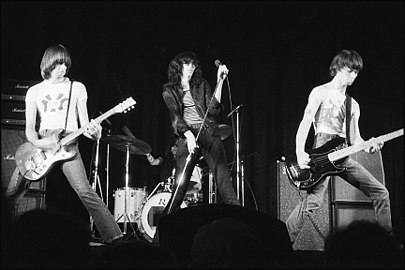

Ramones образовались в начале 1974 года когда Джон Камминс и Дуглас Колвин пригласили к себе в группу Джеффри Хаймана. Колвин хотел играть на гитаре и петь, Каммингс также играл на гитаре, а Хайман на барабанах. Довершить состав должен был их друг, Ричи Стерн, которому предназначалось играть на басу. Однако после нескольких репетиций стало ясно, что Ричи не умел играть на басу, поэтому Дуглас был вынужден помимо вокала переключиться на бас-гитару, а Каммингс стал единственным гитаристом. Колвин первым взял себе фамилию «Рамон», назвав себя Ди Ди Рамоном. Он был вдохновлён легендой, что ещё во времена Silver Beatles Пол Маккартни использовал псевдоним Пол Рамон. Ди Ди убедил других участников группы взять аналогичные псевдонимы и придумал название группы — «Ramones». Хайман и Каммингс стали Джоуи и Джонни Рамоном, соответственно.
30 марта 1974 года состоялось первое публичное выступление Ramones на одной из нью-йоркских вечеринок. В то время группа представляла трио, в составе которого были басист и вокалист Ди Ди Рамон, барабанщик Джоуи Рамон и гитарист Джонни Рамон. Спустя два месяца их менеджер Тамаш Эрдейи сел за барабаны, также взяв псевдоним Томми Рамон, а Джоуи перешёл на вокал. Ранее двое из будущих участников Ramones играли в одной школьной группе Tangerine Puppets, а Джоуи успел побыть в глэм-рок-команде Sniper.В ноябре 1975 года группа попала под опеку менеджера по имени Дэнни Филдз (англ. Danny Fields), ранее открывшего миру The Stooges с Игги Попом и MC5, а также работавшего с Лу Ридом. Филдз опознал в группе необычайный потенциал — он был один из немногих деятелей шоу-индустрии, кто оценил однообразные скоростные и шумные песни, которых группа исполняла около 17 на одном концерте. Публику шокировала не только активная и шумная музыка, но и внешний вид Ramones — драные джинсы и кожаные куртки в сочетании со стоптанными кедами. Ранее ещё ни одна группа не осмеливалась выйти на сцену в нарядах обычной уличной шпаны. К середине 1975 года команда прославилась в родном Нью-Йорке благодаря ставшему культовым клубу CBGB, вокруг которого сплотилась крупнейшая в мире альтернативная сцена (с участием Ramones, Talking Heads, Джонни Сандерса, Blondie, Television, Патти Смит, Richard Hell & The Voidoids, Dead Boys и других). В этой же тусовке в конце 1975-го родился фэнзин «Punk», который фактически даровал название всему музыкальному движению.
К началу 1976 года локальная слава Ramones привлекла внимание рекорд-компании «Sire Records», и он подписал контракт на выпуск долгоиграющего альбома (после долгого сопротивления группы, так как его изначальным предложением был лишь сингл). Пластинка (так и названная «Ramones») была записана за мизерную по тем временам сумму в 6400 долларов. К моменту записи группой было написано уже около трех десятков песен, однако для альбома они отобрали даже не самые лучшие, а те, которые были написаны раньше остальных. Оставшаяся часть попала в следующие два альбома. На записи группа играла с метрономом, который был включен в крайне правое — самое скоростное положение, ранее не использовавшееся в студии никем. За исключением одной урбанистической баллады «I Wanna Be Your Boyfriend», весь диск состоял из мощных агрессивных треков, с гитарой, звучавшей как бензопила, и мощной ритм-секцией (самые известные из них — «Judy is a Punk», «Beat on the Brat», «53rd & 3rd»). Первым синглом стал «Blitzkrieg Bop», а альбом добрался до 111 места в штатовских чартах.
В Англии лонгплей был принят с большим интересом, нежели в США. Легендарный радиоведущий Джон Пил немедленно приступил к прокручиванию альбома в эфире, чем привел в ужас преданных поклонников его передач, но зато привлек к себе уйму молодежи, которая ещё не была знакома с находившимся в Англии в зачаточном состоянии панк-роком. Композиция «Now I Wanna Sniff Some Glue» стала объектом дебатов в Британском парламенте, поскольку была посвящена нюханию клея. 4 июля 1976 года Ramones дали свой первый концерт в Лондоне, заложив фундамент для развития панка в Англии.
В 1977 году группа записала два диска — «Leave Home» (с большим влиянием сёрфа) и «Rocket To Russia» (более мелодичный и менее скоростной). Тогда же группа два раза побывала в британских чартах — с синглами «Swallow My Pride» и «Sheena is a Punk Rocker», однако коммерческий успех, особенно на фоне триумфа Sex Pistols, Damned и Clash, был более чем скромным (и таковым оставался до конца истории группы). Песня «Carbona Not Glue» из «Leave Home» опять была посвящена токсикомании; «carbona» — название чистящей жидкости, которую американские подростки использовали как наркотик. Компания, производящая этот химикат, оказалась недовольной тем, что это название используется панк-группой, и в итоге песню пришлось изъять с альбома, начиная со второго издания. В Великобритании «Leave Home» вышел с песней «Babysitter» вместо «Carbona Not Glue»; но спустя некоторое время произошла ещё одна перекомпоновка, и с тех пор альбом перепечатывался с песней «Sheena is a Punk Rocker» взамен «Carbona Not Glue». Многие годы она так и оставалась недоступной фанатам, пока Rhino Records не включили её в двойной сборник «Hey Ho! Let's Go: The Anthology» 1999 года, а затем и в ремастированную серию переизданий ранних альбомов группы.
Новогодний концерт 31 декабря 1977 года в Лондоне был записан и издан год спустя в качестве двойного концертного альбома «It’s Alive», который до сих пор музыкальными критиками считается одним из самых лучших «живых» дисков в истории рок-музыки.
До начала 1978 года группа работала с продюсером Эдом Бикнеллом (Ed Bicknell), но он покинул группу, начав работать с Dire Straits. В мае 1978 года группу покинул Томми Рамон, оставшийся её продюсером, а на смену ему был взят Марк Белл (англ. Marc Bell) из The Voidoids, взявший псевдоним Марки Рамон. Новый состав записал альбом «Road To Ruin», который немного удивил публику тем, что был заметно медленнее, спокойнее и разнообразнее ранних работ группы. Тем не менее бешеная скорость музыки Ramones по-прежнему проявлялась во всей красе на концертах.